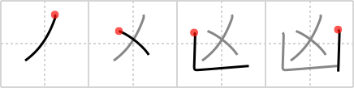

凶
← →
villain

Reading:
On-Yomi: キョウ
Heisig story:
Sheaf . . . shovel.
Koohii stories:
1) [scottamus] 12-6-2006(168): Wolverine (sheaf, see reap (#1488 刈)) takes out a villain who can't be cut by smacking the crap out of him with a shovel.
2) [adhmm] 18-11-2007(152): Here the villain digs a hole with a shovel and covers it with a sheaf, hoping someone will fall in.
3) [wasurenaide] 27-7-2007(34): Note: the stroke order is actually: sheaf, shovel.
4) [rgravina] 4-8-2006(15): The villain uses a shovel to hide his victim under a pile of sheafs, before making a quick getaway.
5) [squeaky_lill_mk] 15-8-2010(11): Death (I use Terry Pratchett's Death as a primitive for reap (#1488 刈), hope (#1489 希), kill (#1493 殺), ward (#1696 区)) uses a sword ( 刈 ) on kings, a scythe on ordinary folk, and a shovel on villains.